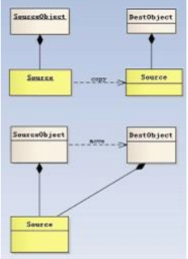

这篇文章以《C++ Primer》(第五版)为基础，结合自己的理解，将C++11的新特性加以总结、概括，以加深印象同时方便自己查阅。
1、long long类型
C++语言规定，一个int至少和一个short一样大；一个long至少和一个int一样大，一个long long至少和一个long一样大，其中数据类型long long是在C++11中新定义的。下表列出了C++标准规定的尺寸的最小值，同时允许编译器赋予这些类型更大的尺寸。
2、列表初始化
C++语言定义了初始化的好几种不同形式，例如想要定义一个名为uints_sold的int变量并初始化为0，以下四条语句都可以做到：
1 | int units_sold = 0； |
2 | int units_sold = {0}； //C++11新特性 |
3 | int units_sold{0}； //C++11新特性 |
4 | int units_sold(0)； |
5 | |
6 | int *pia = new int[10]{0, 1, 2, 3, 4, 5, 6, 7, 8, 9}; |
作为C++11新标准的一部分，用花括号来初始化变量得到了全面的应用，而在此之前，这种初始化的形式仅在某些受限的场合下才能使用，这种初始化的形式称为列表初始化。无论是初始化对象还是某些时候为对象赋新值，都可以使用这样一组由花括号括起来的初始值了。
列表初始化还可以应用于为vector等容器对象元素赋初值的方法：
1 | vector<string> articles = {"a", "an", "the"}; |
2 | list<string> authors = {"Milton", "Shakespeare"}; |
3 | |
4 | //关联容器也适用： |
5 | set<string> exclude = {"the", "but", "and", "or"}; |
6 | map<string, string> authors = { {"Joyce", "James"}, {"Austen", "Jane"} }; |
7 | |
8 | pair<string, int> word_count(); |
9 | word_count.insert({str, 1}); //在新标准下，创建一个pair最简方法就是利用列表初始化。 |
C++11新标准允许使用花括号括起来的初始化列表作为赋值语句的右侧运算对象：
1 | vector<int> v; |
2 | v = {0, 1, 2, 3, 4, 5, 6, 7, 8, 9}; |
同时，C++11新标准还规定，函数可以返回花括号包围的值的列表：
1 | vector<string> process() { |
2 | ...... |
3 | return {"functionX", "okay"}; |
4 | } |
5 | |
6 | pair<string int> process(...) { |
7 | ...... |
8 | if(...) |
9 | return pair<string, int>(); //隐式构造返回值 |
10 | else |
11 | return {str, str.size()}; //列表初始化 |
12 | } |
当用于内置类型的变量时，这种初始化形式有一个重要特点：如果使用列表初始化且初始值存在丢失信息的风险，编译器将报错：
1 | long double pi = 3.14159265; |
2 | int a{pi}, b = {pi}; //错误：转换未执行，因为存在丢失信息的危险 |
3 | int c(pi), d = (pi); //正确：转化执行，且确实丢失了部分值 |
使用long double的值初始化int变量可能丢失数据，所以编译器拒绝了a和b的初始化请求。其中，至少pi的小数部分会丢失，而且int也可能存不下pi的整数部分。
3、nullptr常量
一下列出几个生成空指针的方法：
1 | int *p1 = nullptr; |
2 | int *p2 = 0; |
3 | int *p3 = NULL; |
在过去的程序中，会用到一个名为NULL的预处理变量来给指针赋值，这个变量在头文件cstdlib中定义，它的值就是0。当用到一个预处理变量时，预处理器会自动地将它替换为实际值，因此用NULL初始化指针和用0初始化指针是一样的。这种处理方式将会导致C++中重载特性发生混乱：
1 | void fun(char *); |
2 | void fun(int); |
对于上述两个函数来说，因为NULL被定义为0，那么fun(NULL)将会去调用void fun(int);，从而违反直观。为了解决上述问题，C++11引入了nullptr关键字，专门用来区分NULL和0。nullptr的类型为nullptr_t，能够隐式的转换为任何指针或成员指针的类型，也能和他们进行相等或者不等的比较。
在新标准下，现在的C++程序最好使用nullptr，同时尽量避免使用NULL。
4、constexpr变量、constexpr函数及字面值常量类
constexpr变量
C++11新标准规定，允许将变量声明为constexpr类型以便由编译器来验证常量的值是否是一个常量表达式。声明为constexpr的变量一定是一个常量，而且必须用常量表达式初始化：
1 | constexpr int a = 20; //20是常量表达式 |
2 | constexpr int b = a + 1; //a + 1是常量表达式 |
3 | constexpr int c = fun1(); //只有当fun1()是一个constexpr函数时，才是一条正确的语句 |
ps：一个constexpr指针的初始值必须是nullptr、NULL或者是存储于某个固定地址中的对象。
constexpr函数
constexpr函数需要遵循几项约定：函数的返回类型及所有形参的类型都得是字面值类型(算术类型、引用和指针类型、枚举类型、字面值常量类)，且函数体中必须有且只有一条return语句。
1 | constexpr int fun1() { return 1; } |
当fun1()的声明如上时，上文的c的声明语句正确，因为编译器能在程序编译时验证fun1()函数返回的是常量表达式。在执行该初始化任务时，编译器把对constexpr函数的的调用替换成其结果值。为了能在编译过程中随时展开，constexpr函数被隐式地指定为内联函数。
同时，我们允许constexpr函数的返回值并非一个常量：
1 | constexpr size_t fun2(int cnt) { return fun1() * cnt; } |
当fun2()的实参是常量表达式时，它的返回值也是常量表达式，反之则不然：
1 | int arr1[fun(2)]; //正确：fun2(2)是常量表达式，此时编译器用相应的结果替换对正确：fun2(2)函数的调用 |
2 | int i = 2; |
3 | int arr2[fun(i)]; //错误：fun2(i)不是常量表达式，编译出错 |
ps：constexpr函数不一定返回常量表达式。
5、字面值常量类
和其他类不同，字面值类型的类可能含有constexpr函数成员。这样的成员必须符合constexpr函数的所有要求，他们是隐式const的。
数据成员都是字面值类型的聚合类（所有成员都是public的；没有定义任何构造函数；没有类内初始值；没有基类、也没有virtual函数）是字面值常量类。如果一个类不是聚合类，但他符合下述要求，则也是一个字面值常量类：
- 数据成员都必须是字面值类型
- 类内至少含有一个
constexpr构造函数 - 如果一个数据成员含有类内初始值，则内置类型成员的初始值必须是一条常量表达式；或者如果成员属于某种类类型，则初始值必须使用成员自己的
constexpr构造函数 - 类必须使用析构函数的默认定义，该成员负责销毁的对象
constexpr构造函数
尽管构造函数不能是const的(当我们创建类的一个const对象时，直到构造函数完成初始化过程，对象才能真正取得其“常量”属性。因此，构造函数在const对象的构造过程中可以向其写值),但是字面值常量类的构造函数可以是constexpr函数。事实上，一个字面值常量类必须至少提供一个constexpr构造函数。constexpr构造函数可以声明成=default(下文有详细的解释)的形式。否则，constexpr构造函数就必须既符合构造函数的要求（意味着不能包含返回语句），又符合constexpr函数的要求（意味着它能拥有的唯一可执行语句就是返回语句）。综合上述两点可知，constexpr构造函数一般来说应该是空的。我们通过前置constexpr关键字就可以声明一个constexpr构造函数了：
1 | class Debug{ |
2 | private: |
3 | bool hw; |
4 | bool io; |
5 | bool other; |
6 | public: |
7 | constexpr Debug(bool b = true): hw(b), io(b), other(b) {} |
8 | constexpr Debug(bool h, bool i, bool o): hw(h), io(i), other(o) {} |
9 | } |
constexpr构造函数必须初始化所有数据成员，初始值或者使用constexpr构造函数，或者是一条常量表达式。constexpr构造函数用于生成constexpr对象以及constexpr函数的参数或返回类型。const适用于变量，并防止它们在代码中被修改。constexpr告诉编译器，这个表达式产生一个编译时常量（根据编译器的不同行为，常量又分为编译时常量和运行时常量，编译时常量一定是运行时常量，只是编译时常量在编译的时候就被计算执行计算，并带入到程序中一切可能用到它的计算式中。），所以它可以用在像数组长度，赋值给const变量等等。
6、类型别名声明
新标准规定了一种新的方法，使用别名声明来定义类型的别名，这种方法用关键字using作为别名声明的开始，其后紧跟别名和等号，其作用是把等号左侧的名字规定成等号右侧类型的别名。用法与typedef类似：
1 | typedef double wages; //wages是double的同义词 |
2 | wages hourly, weekly; //等价于double hourly, weekly |
3 | |
4 | using wages = double; //wages是double的同义词 |
5 | wages hourly, weekly; //等价于double hourly, weekly |
由于模板不是一个类型，所以我们不能定义一个typedef引用一个模板，但是新标准允许我们为类模板定义一个类型别名：
1 | template<typename T> using twin = pair<T, T>; |
2 | twin<string> authors; //authors是一个pair<string, string> |
7、auto类型指示符与尾指返回类型
一、auto类型指示符
编程时常常需要把表达式的值赋给变量，这就要求在声明变量的时候清楚地知道表达式的类型。C++11引入auto类型说明符，用它就能让编译器替我们分析表达式所属的类型。auto让编译器通过初始值来推算变量的类型，因此auto定义的变量必须有初始值。
1 | auto item = val1 + val2; |
编译器将根据val1和val2相加的结果判断item的类型。如果val1和val2是类A的对象，则item的类型就是A；如果这两个变量的类型是double，则item的类型就是double，以此类推。
使用auto也能在一条语句中声明多个变量。因为一条声明语句只能有一个基本数据类型，所以该语句中所有变量的初始基本数据类型都必须一样：
1 | auto i = 0, *p = &i; //正确：i是整数、p是整型指针 |
2 | auto sz = 0, pi = 3.14; //错误：sz和pi的类型不一致 |
使用auto进行类型推导的一个最为常见而且显著的例子就是迭代器。在以前我们需要这样来书写一个迭代器：
1 | for(vector<int>::const_iterator itr = vec.cbegin(); itr != vec.cend(); ++itr) |
而有了auto之后可以：
1 | // 由于cbegin()将返回vector<int>::const_iterator，所以itr也应该是vector<int>::const_iterator类型 |
2 | for(auto itr = vec.cbegin(); itr != vec.cend(); ++itr); |
注意：auto不能用于函数传参，因此下面的做法是无法通过编译的（考虑重载的问题，我们应该使用模板）：
1 | int add(auto x, auto y); |
此外，auto还不能用于推导数组类型。
其次，auto一般会忽略掉顶层const，底层const会被保留下来。
二、尾置返回类型
首先,我们思考一个问题:一个函数如何返回数组指针?
想要得到答案,我们需要明白下面的含义:
1 | int array[10]; //array是一个含有10个整数的数组 |
2 | int *p1[10]; //p1是一个含有10个指针的数组 |
3 | int (*p2)[10] = &array; //p2是一个指针，它指向含有10个整数的数组 |
因此，如果我们想定义一个返回数组指针的函数，则数组的维度必须跟在函数名字之后。返回数组指针的函数形式如下所示：
1 | Type (*function(parameter_list)) [dimension] |
2 | //具体例子： |
3 | int (*func(int i)) [10]; |
在C++11中，我们可以使用尾置返回类型来简化上述声明方法。任何函数的定义都能使用尾置返回类型，但这种形式对于返回类型比较复杂的函数最有效。尾置返回类型跟在形参列表后面并以一个->符号开头。为了表示函数真正的返回类型跟在形参列表之后，我们在本应该出现的地方放置一个auto：
1 | //上述示例可以改写为： |
2 | auto fun(int i) -> int (*) [10]; |
同时，上述方法还可以通过decltype关键字进行改写：
1 | int odd[] = {1, 3, 5, 7, 9}; |
2 | int even[] = {0, 2, 4, 6, 8}; |
3 | |
4 | decltype(odd) *arrPtr(int i) { |
5 | return (i % 2) ? &odd : &even; |
6 | } |
因为odd是数组，所有arrPtr返回一个指向含有5个整数的数组的指针。decltype并不负责把数组类型转换成对应的指针，所以decltype的结果是个数组，想要表示arrPtr返回指针还必须在函数声明时加一个*。具体decltype细节将在下面说明。
8、decltype类型指示符
C++11新标准引入了第二种类型说明赋decltype，他的作用是选择并返回操作数的数据类型。在此过程中，编译器分析表达式并得到它的类型，却不实际计算表达式的值：
1 | decltype(fun()) sum = x; //sum的类型就是函数f的返回类型 |
编译器并不实际调用函数fun()，而是使用当调用发生时f的返回值类型作为sum。
1 | const int ci = 0, &cj = ci; |
2 | decltype(ci) x = 0; //x的类型是const int |
3 | decltype(cj) y = x; //y的类型是const int &，y绑定到变量x |
4 | decltype(cj) z; //错误：z是一个引用，必须初始化 |
你可能会思考，auto 能不能用于推导函数的返回类型。考虑这样一个例子加法函数的例子，在传统 C++ 中我们必须这么写：
1 | template<typename R, typename T, typename U> |
2 | R add(T x, U y) { |
3 | return x+y； |
4 | } |
这样的代码其实变得很丑陋，因为程序员在使用这个模板函数的时候，必须明确指出返回类型。但事实上我们并不知道add()这个函数会做什么样的操作，获得一个什么样的返回类型。
在C++11中这个问题得到解决。虽然你可能马上回反应出来使用decltype推导x+y的类型，写出这样的代码：
1 | decltype(x+y) add(T x, U y); |
但事实上这样的写法并不能通过编译。这是因为在编译器读到decltype(x+y)时，x和y尚未被定义。为了解决这个问题，C++11还引入了一个叫做尾置返回类型(trailing return type），利用auto关键字将返回类型后置：
1 | template<typename T, typename U> |
2 | auto add(T x, U y) -> decltype(x+y) { |
3 | return x+y; |
4 | } |
从C++14开始是可以直接让普通函数具备返回值推导，因此下面的写法变得合法：
1 | template<typename T, typename U> |
2 | auto add(T x, U y) { |
3 | return x+y; |
4 | } |
decltype和auto都可以用来推断类型，但是二者有几处明显的差异：
- 1.
auto忽略顶层const，decltype保留顶层const； - 2.对引用操作，
auto推断出原有类型，decltype推断出引用； - 3.对解引用操作，
auto推断出原有类型，decltype推断出引用； - 4.
auto推断时会实际执行，decltype不会执行，只做分析。
总之在使用中过程中和const、引用和指针结合时需要特别小心。
9、使用auto或decltype推断string::size_type类型
对于string类的size函数来说，返回一个int或是一个unsigned都是合情理的，但是size函数实际上返回的是一个string::size_type类型的的值以体现标准库类型与机器无关的特性。
尽管不太清楚string::size_type类型的细节，但是有一点可以肯定，它是一个无符号类型的值，而且能足够放下任何string对象的大小。
在C++11新标准中，允许编译器通过auto或decltype来推断变量的类型：
1 | auto len_1 = line.size(); |
2 | decltype(line.szie()) len_2 = line.size(); |
ps：由于size函数返回的是一个无符号整型，因此切记，如果表达式中混用了有符号数和无符号数将可能产生意想不到的结果。例如，假设n是一个具有负值的int，则表达式s.size() < n的判断结果几乎肯定是true。这是因为负值n会自动转化成一个比较大的无符号值。
10、类内初始化
C++11新标准规定，可以为数据成员提供一个 类内初始值 。创建对象时，类内初始值将用于初始化数据成员。没有初始值的成员将被默认初始化。
1 | class Window_mgr { |
2 | private: |
3 | //默认情况下，一个Window_mgr包含一个标准尺寸的空白Screen |
4 | std::vector<Screen> screens{Screen(24, 80, "")}; |
5 | }; |
如我们之前所知的，类内初始值必须使用=的初始化形或者花括号括起来的直接初始化形式。
ps：类内初始化对struct和class关键字都适用。实际上struct关键字和class关键字仅仅是形式上有所不同，我们可以用这个两个关键字中的任何一个定义一个类，唯一的区别是，他们的默认访问权限不太一样。
11、范围for语句
C++11新标准提供了一种语句：范围for（range for）语句。这种语句遍历给定序列中的每个元素并对序列中的每个值执行某种操作，其语法是：
1 | for(declaration: expression) |
2 | statement |
其中，expression部分是一个对象，用于表示一个序列。declaration部分负责定义一个变量，该变量将被用于访问序列中的基础元素。每次迭代，declaration部分的变量会被初始化为expression部分的下一个元素值：
1 | string str("hello world"); |
2 | for(auto c : str) //使用auto关键字让编译器来决定c的类型，这里是char类型 |
3 | cout << c << endl; |
如果想要改变string对象中字符的值，必须把循环变量定义成引用类型，以把整个string对象转换成大写为例：
1 | string str("hello world"); |
2 | for (auto &c : str) |
3 | c = toupper(c); |
4 | cout << str << endl; |
此外范围for语句还适用于容器遍历：
1 | vector<int> v = {0, 1, 2, 3, 4, 5, 6, 7, 8, 9}; |
2 | for (auto &r : v) |
3 | r *= 2; //将v中每个元素的值翻倍 |
注意：使用new语句得到的动态数组不能使用范围for语句，因为动态分配的内存不是一个数组类型（维度是数组类型的一部分,而我们通过new得到的只是数组指针）。
12、定义vector对象的vector（向量的向量）
早期版本的C++标准中，如果vector的元素还是vector（或者其他模板类型），则其定义的形式与现在的C++11新标准略有不同。过去，必须在外层vector对象的右尖括号和其元素类型之间添加一个空格，如应该写成vector<vector<int> >而非vector<vector<int>>。
13、容器的cbegin和cend函数
begin和end返回的具体类型由对象是否为常量决定的，如果对象是常量，begin和end返回cosnt_iterator;如果不是常量，则返回iterator：
1 | vector<int> v; |
2 | const vector<int> cv; |
3 | auto it1 = v.begin(); //it1的类型是vector<int>::iterator |
4 | auto it2 = cv.begin(); //it2的类型是vector<int>::const_iterator |
有时候这种默认的行为并非我们所需要的，如果对象只需要读操作而无需写操作的话最好使用常量类型。为了便于专门得到const_iterator类型的返回值，C++11新标准引入了cbegin和cend两个新函数：
1 | auto it3 = v.cbegin(); //it3的类型也是vector<int>::const_iterator |
14、数组的begin和end函数
为了让数组指针的使用更加简单、更加安全，C++11新标准引入了两个名为begin和end的函数，这两个函数与容器中的同名函数功能类似，不过数组毕竟不是类类型，因此这两个函数不是成员函数：
1 | int ia[] = {0, 1, 2, 3, 4, 5, 6, 7, 8, 9} |
2 | int *beg = begin(ia); //指向ia首元素的指针 |
3 | int *last = end(ia); //指向ia尾元素的下一个位置的指针 |
这两个函数定义在iterator头文件中。下面程序负责找到arr中的第一个负数：
1 | int *p_beg = begin(arr), *p_end = end(arr); |
2 | while(p_beg != p_end && *p_beg >= 0) |
3 | p_beg++; |
4 | return {"functionX", "okay"}; |
注意：使用new语句得到的动态数组不能使用begin()或end()语句，因为动态分配的内存不是一个数组类型（维度是数组类型的一部分,而我们通过new得到的只是数组指针）。
15、除法的舍入规则
在除法运算中，如果两个运算对象的符号相同则商为正（如果不为0的话），否则商为负。C++语言的早期版本允许结果为负值的商向上或向下取整，C++11新标准规定商一律向0取整（直接切除小数部分）。
16、标准库initializer_list类和可变参数模板
为了编写能处理不同数量实参的函数，C++11新标准提供了两种新方法：
一、如果所有的实参类型相同，可以传递一个名为initializer_list的标准库类型，该类型是一种标准库类型，用于表示某种特定类型的值的数组，其定义在同名的头文件中，提供以下操作：
1 | initializer_list<T> lst; //默认初始化，T类型元素的空列表 |
2 | initializer_list<T> lst{a, b, c...} //lst的元素和初始值一样多；lst的元素是对应初始值的副本；列表中的元素是const的 |
3 | lst2(lst) //拷贝复制，拷贝后原始列表和副本共享元素 |
4 | lst2 = lst //拷贝复制，拷贝后原始列表和副本共享元素 |
5 | lst.size() |
6 | lst.begin() |
7 | lst.end() |
和vecotr一样，initializer_list也是一种模板类型，定义时必须说明模板的类型。和vector不一样的是initializer_list对象中的元素永远是常量值，我们无法改变initializer_list对象中的元素值。用法如下：
1 | void error_msg(ErrCode e, initializer_list<string> il) { |
2 | ...... |
3 | } |
4 | |
5 | error_msg(ErrCode(41), {"functionX", "okay"}); |
二、如果实参的类型不同，我们可以编写一种特殊的函数，也就是所谓的可变参数模板。
一个可变参数模板就是一个接受可变数目参数的模板函数或模板类。可变数目的参数被称为参数包。存在两种参数包：模板参数包，表示零个或多个模板参数；函数参数包，表示零个或多个函数参数。
我们用一个省略号来支出一个模板参数或函数参数表示一个包。在一个模板参数列表中，class...或typename...支出接下来的参数表示零个或多个类型的列表；一个类型名后面跟一个省略号表示零个或多个给定类型的非类型参数的列表。在函数参数列表中，如果一个参数的类型是一个模板参数包，则此参数也是一个函数参数包：
1 | //Args是一个模板参数包；rest是一个函数参数包 |
2 | //Args表示零个或多个模板类型参数 |
3 | //rest表示零个或多个函数参数 |
4 | template <typename T, typename... Args> |
5 | void foo(const T &t, const Args... rest); |
编译器从函数的实参推断模板参数类型。对于一个可变参数模板，编译器还会推断包中参数的数目：
1 | int i = 0; double d = 3.14; string s = "hello world"; |
2 | foo(i, s ,42, d); //包中有个3参数，实例化为：void foo(const int&, const string&, const int&, const double&); |
3 | foo(s, 42, "hi"); //包中有个2参数，实例化为：void foo(const string&, const int&, const char[3]&); |
4 | foo(d, s); //包中有个1参数，实例化为：void foo(const double&, const string&); |
5 | foo("hi"); //包中有个0参数，实例化为：void foo(const char[3]&); |
可变参数函数通常是递归的。第一把调用处理包中的第一个实参，然后用剩余实参调用自身。
1 | //用来终止递归并打印最后一个元素的函数 |
2 | //此函数必须在可变参数版本的print定义之前声明 |
3 | template<typename T> |
4 | ostream &print(ostream &os, const T &t) { |
5 | return os << t; //包中最后一个元素之后不打印分隔符 |
6 | } |
7 | |
8 | //包中处理最后一个元素之外的其他元素都会调用这个版本的print |
9 | template<typename T, typename... Args> |
10 | ostream &print(ostream &os, const T &t, const Args&... rest) { |
11 | os << t << ","; //打印第一个实参 |
12 | return print(os, rest...); //递归调用，打印其他实参 |
13 | } |
给定print(cout, i, s, 42);递归会执行如下：
1、调用print(cout, i ,s, 42)；t = i；rest... = s, 42
2、调用print(cout, s, 42)；t = s；rest... = 42
3、调用print(cout, 42),非可变参数版本的print
17、= default和 = delete的用法
= default
对于一个类来说：
1 | class Sales_data { |
2 | Sales_data() = default; |
3 | }; |
因为该构造函数不接受任何实参，所以它是一个默认构造函数，定义这个函数的目的是因为我们既需要其他形式的构造函数，也需要默认的构造函数。如果我们需要默认的行为，那么可以通过在参数列表后面写上= default来要求编译器生成构造函数，使用这种方式生成的构造函数比用户定义的默认构造函数具有更高的效率。= default既可以和声明一起出现在类的内部，也可以作为定义出现在类的外部，出现在内部时会被默认为内联的。
= delete
在新标准下，我们可以通过将拷贝构造函数和拷贝赋值运算符定义为删除的函数来阻止拷贝。删除的函数是这样一种函数：我们虽然声明了他们，但不能以任何方式使用他们。在函数的参数列表后面加上= delete来指出我们希望将它定义为删除的：
1 | class NoCopy { |
2 | NoCopy() = default; //默认构造函数 |
3 | NoCopy(const NoCopy &) = delete; //阻止拷贝 |
4 | NoCopy &operator=(const NoCopy &) = delete; //阻止赋值 |
5 | ~NoCopy() = default; //合成的析构函数 |
6 | } |
与= default不同，= delete必须出现在函数第一次声明的时候，这个差异与这些声明的含义在逻辑上是吻合的。一个默认的成员只影响为这个成员而生成的代码，因此= default直到编译器生成代码时才需要。而另一方面，编译器需要知道一个函数是删除的，以便禁止师徒使用它的操作，
与= default的另一个不同之处是，我们可以对任何函数指定= default（我们只能对编译器可以合成的默认构造函数或拷贝控制成员使用= default）。虽然删除函数的主要用途是禁止拷贝控制成员，但当我们希望引导函数匹配过程时，删除函数有时也是有用的。但是谨记，我们不能删除析构函数。
18、委托构造函数
C++11新标准扩展了构造函数初始值的功能，使我们可以定义所谓的委托构造函数。一个委托构造函数使用它所属类的其他构造函数执行自己的初始化过程，或者说它把它自己的一些（或全部）职责委托给了其他构造函数：
1 | class Sales_data { |
2 | public: |
3 | //非委托构造函数使用对应的实参初始化成员 |
4 | Sales_data(std::string s, unsigned cnt, double price): |
5 | bookNo(s), units_sold(cnt), revenue(cnt * price) {} |
6 | //其余构造函数全部委托给另一个构造函数 |
7 | Sales_data(): Sales_data("", 0, 0) {} |
8 | Sales_data(std::string s): Sales_data(s, 0, 0) {} |
9 | Sales_data(std::istream &is): Sales_data() { read(is, *this); } |
10 | ...... |
11 | }; |
19、用string对象处理文件流对象
1 | ifstream in(ifile); |
2 | ofstream out; |
在新的C++11标准中，文件名既可以是库类型string对象，也可以是C风格的字符数组。旧版本的标准库只允许C风格的字符数组。
20、array和forward_list容器
array和forward_list是C++新标准增加的类型。与内置数组相比，array是一种更安全、更容易使用的数组类型。与内置数组类似，array对象的大小是固定的。因此，array不支持添加和删除元素以及改变容器大小的操作。forward_list的设计目标是达到与最好的手写的单向链表数据结构相当的性能。因此没有size操作，因为保存或计算其大小就会比手写链表多出额外的开销。对其他容器而言，size保证是一个快速的常量时间的操作。
ps：新标准库容器比旧版本快的多。新标准库容器的性能几乎肯定与最精心优化过的同类数据结构一样好（通常会更好）。现代C++程序应该使用标准库容器，而不是更原始的数据结构，如内置数组。通常使用vector是最好的选择，除非你有很好的理由选择其他容器。
21、容器的非成员函数swap
swap操作交换两个相同类型的容器内容。调用swap之后，两个容器中的元素将会交换：
1 | vecotr<string> s1(10); //10个元素 |
2 | vecotr<string> s2(24); //25个元素 |
3 | swap(s1, s2); |
调用swap后，s1将有24个元素，而s2将有10个元素。处array外，交换两个容器内容的操作抱枕会很快————元素本身并未交换，swap只是交换了两个容器的内部数据结构。
ps：除array外，swap不对任何元素进行拷贝、删除或插入操作，因此可以保证在常数时间内完成。
在新标准中，容器既提供了成员函数版本的swap，也提供了非成员函数版本的swap。非成员版本的swap在泛型变成中是非常重要的。统一使用非成员版本的swap是一个好习惯。
22、容器的insert成员返回类型
在新标准中，接受元素个数或范围的insert版本返回指向第一个新加入元素的迭代器。在旧标准中，这些操作返回void。如果范围为空，不插入任何元素，了insert操作会将第一个参数返回。
23、容器的emplace成员
C++新标准引入了三个新成员————emplace_front、emplace、emplace_back，这些操作构造元素而不是拷贝元素，分别对应与push_ront、push、push_back。当我们调用一个emplace成员函数时，则是将参数传递给元素类型的构造函数。emplace成员使用这些参数在容器管理的内存空间中直接构造元素：
1 | //在c的末尾构造一个Sales_data对象 |
2 | c.emplace_back("987-0590353403", 25, 15.99); //正确：将会自动调用构造函数 |
3 | c.push_back("987-0590353403", 25, 15.99); //错误：需要显示调用构造函数生成一个对象再添加元素 |
4 | c.push_back(Sales_data("987-0590353403", 25, 15.99));//正确：创建一个零食的Sales_data对象传递给push_back |
24、管理容器的成员函数
1 | //shrink_to_fit只适用于vector、string和deque |
2 | //capacity和reserve只适用于vector和string |
3 | c.shrink_to_fit(); //请求将capacity()减小为与size()相同大小 |
4 | c.capacity(); //不重新分配内存的话，c可以保存多少元素 |
5 | c.reserve(); //分配至少能容纳n个元素的内存空间 |
在新标准中，我们可以调用shrink_to_fit来要求特定容器退回不需要的内存空间。此函数支出我们不再需要任何多余的内存空间。但是，具体的实现可以选择忽略次请求。也就是说，调用shrink_to_fit也并不一定保证退回内存空间。
25、string的数值转换
新标准引入了多个函数，可以实现数值数据与标准库string之间的转换：
1 | int i =42; |
2 | string s = to_string(i); |
3 | double d = stod(s); |
要转换为数值的string中第一个非空白符必须是数值中可能出现的字符：
1 | string s2 = "pi = 3.14159265358"; |
2 | d = stod(s2.substr(s2.find_first_of("+-.0123456789))); |
string和数值之间的转换有以下函数：
1 | to_string(val); //一组重载函数，返回val的string表示，val可以是任何算数类型 |
2 | stoi(s, p, b); //int |
3 | |
4 | stol(s, p, b); //long |
5 | stoul(s, p, b); //unsigned long |
6 | stoll(s, p, b); //long long |
7 | stoull(s, p, b); //unsigned long long |
8 | |
9 | stof(s, p); //float |
10 | stod(s, p); //double |
11 | stold(s, p); //long double |
ps：如果string不能转换一个数值，这些函数会抛出一个invalid_argument异常。
26、lambda表达式
匿名函数有函数体，但没有函数名。匿名函数是很多高级语言都支持的概念，如lisp语言在1958年首先采用匿名函数。正因为如此，C++11也同样引入了lambda函数。在C++11中,你可以在源码中内联一个lambda函数，这就使得创建快速的、一次性的函数变得简单了。
相同类似功能我们也可以使用函数对象或者函数指针实现：函数对象能维护状态，但语法开销大，而函数指针语法开销小，却没法保存范围内的状态。lambda表达式正是结合了两者的优点。
声明Lambda表达式
1 | [capture list] (params list) mutable exception-> return type { function body }; |
2 | [capture list] (params list) -> return type {function body}; |
3 | [capture list] (params list) {function body}; |
4 | [capture list] {function body}; |
capture list：捕获外部变量列表
params list：形参列表
mutable指示符：用来说用是否可以修改捕获的变量
exception：异常设定
return type：返回类型
function body：函数体
简单的例子
在C++中我们对STL库中的sort()运用十分频繁，接下来就是关于他的一个例子：
1 | bool compare(int a,int b){ |
2 | return a<b; |
3 | } |
4 | { |
5 | vector<int> vec{1,0,9,5,3,3,7,8,2}; |
6 | sort(vec.begin(),vec.end(),compare); |
7 | //在C++11之前，我们使用STL的sort函数，可以提供一个谓词函数来为sort改变其排序判断标准 |
8 | } |
接下来是lambda表达式的形式：
1 | { |
2 | vector<int> vec{1,0,9,5,3,3,7,8,2}; |
3 | sort(lbvec.begin(), lbvec.end(), [](int a, int b) -> bool { return a < b; }); // Lambda表达式 |
4 | } |
lambda不仅提高了代码可读性，且在例子中，这一个提供判断依据的函数是只需调用一次，在这时，lambda表达式就显示出它的“即用即扔”的特点，很适合这种不需要重复调用且运用区域单一的情景（而不是去多写一个compare的函数）。当然我们也可以定义一个可调用对象用来代表lambda表达式
1 | { |
2 | vector<int> vec{1,0,9,5,3,3,7,8,2}; |
3 | auto f = [](int a, int b) -> bool { return a < b; }; |
4 | sort(lbvec.begin(), lbvec.end(), f); |
5 | |
6 | } |
捕获外部变量
Lambda表达式可以捕获外面变量，但需要我们提供一个谓词函数（[capture list]在声明表达式最前）。类似参数传递方式：值传递、引入传递、指针传递。在Lambda表达式中，外部变量捕获方式也类似：值捕获、引用捕获、隐式捕获。
值捕获
1 | int a = 123; |
2 | auto f = [a] { cout << a << endl; }; |
3 | f(); // 输出：123 |
4 | a = 321; |
5 | f(); // 输出：123 |
值捕获和参数传递中的值传递类似，被捕获的值在Lambda表达式创建时通过值拷贝的方式传入，因此Lambda表达式函数体中不能修改该外部变量的值；同样，函数体外对于值的修改也不会改变被捕获的值。
引用捕获
当以引用的方式捕获一个变量时，必须保证在lambda执行时变量是存在的。
1 | int a = 123; |
2 | auto f = [&a] { cout << a << endl; }; |
3 | a = 321; |
4 | f(); // 输出：321 |
引用捕获的变量使用的实际上就是该引用所绑定的对象，因此引用对象的改变会改变函数体内对该对象的引用的值。
隐式捕获
除了显式列出我们希望使用的来自所在函数的变量之外，还可以让编译器根据lambda体中的代码来推断我们要使用那些变量。隐式捕获有两种方式，分别是
[=]：以值补获的方式捕获外部所有变量
[&]：表示以引用捕获的方式捕获外部所有变量。
1 | int a = 123 ,b=321; |
2 | auto df = [=] { cout << a << b << endl; }; // 值捕获 |
3 | auto rf = [&] { cout << a << b << endl; }; // 引用捕获 |
其他捕获方式
[ ]: 不捕获任何变量（无参函数）[变量1,&变量2, …]: 值(引用)形式捕获指定的多个外部变量[this]: 值捕获this指针[=, &x]: 变量x以引用形式捕获，其余变量以传值形式捕获
Lambda表达式的参数
- 参数列表中不能有默认参数
- 不支持可变参数
- 所有参数必须有参数名
参考文献：https://blog.csdn.net/qq_43265890/article/details/83218413**
27、标准库bind函数
对于捕获局部变量的lambda表达式来说，很容易满足谓词的要求（无论一元谓词还是二元谓词），但是如果想用函数的形式，解决谓词长度的问题，我们就需要用到bind标准库函数，它定义在functional中。可以将bind函数看成一个通用的函数适配器，它接受一个可调用对象，生成一个新的可调用对象来适应原对象的参数列表。调用bind的一般形式为：
1 | auto newCallable = bind(callable, arg_list); |
其中，newCallable本身是一个可调用对象，arg_list是一个逗号分隔的参数列表，对应给定的callable的参数。即，当我们调用newCallable时，newCallable会调用callable并传递给它arg_list中的参数。arg_list中的参数可能包括形如_n的名字，其中n是一个整数。这些参数是占位符，表示newCallable的参数，他们占据了传递给newCallable的参数的“位置”。数值n表示生成的可调用对象中参数的位置：_1为newCallable的第一个参数，_2为第二个参数，以此类推：
1 | auto check = bind(check_size, _1, 6); |
2 | bool b = check(s); //check(s)会调用check_size(s, 6); |
3 | |
4 | //我们可以将原来基于lambda表达式的find_if调用替换为check_size的bind版本： |
5 | auto wc = find_if(words.begin(), words.end(), [sz](const string &a) {...})； |
6 | auto wc = find_if(words.begin(), words.end(), bind(check_size, _1, sz)); |
名字_n都定义在一个名为placeholders的命名空间中，而这个命名空间本身定义在std命名空间中，因此对_1对应的using声明为：using std::placeholders::_1;或者使用using namespace std::placeholders;
28、无序容器
新标准定义了4个无序关联容器（unordered associative container）。这些容器不是使用比较运算符来组织元素，而是使用哈希函数和关键字类型的==运算符。
29、智能指针
下一篇博客有详细的说明，这里不在赘述。
30、右值引用
在看《C++ Primer》中有关右值方面的问题时，对右值的应用场景不是很理解，所以在网上找了下有关右值的文章，其中一篇文章《4行代码看看右值引用》觉得写得不错。本节以下内容是原文，转载于https://www.cnblogs.com/qicosmos/p/4283455.html。
概述
右值引用的概念有些读者可能会感到陌生，其实他和C++98/03中的左值引用有些类似，例如，c++98/03中的左值引用是这样的：
1 | int i = 0; |
2 | int& j = i; |
这里的int&是对左值进行绑定（但是int&却不能绑定右值），相应的，对右值进行绑定的引用就是右值引用，他的语法是这样的A&&，通过双引号来表示绑定类型为A的右值。通过&&我们就可以很方便的绑定右值了，比如我们可以这样绑定一个右值：
1 | int&& i = 0; |
这里我们绑定了一个右值0，关于右值的概念会在后面介绍。右值引用是C++11中新增加的一个很重要的特性，他主是要用来解决C++98/03中遇到的两个问题，第一个问题就是临时对象非必要的昂贵的拷贝操作，第二个问题是在模板函数中如何按照参数的实际类型进行转发。通过引入右值引用，很好的解决了这两个问题，改进了程序性能，后面将会详细介绍右值引用是如何解决这两个问题的。
和右值引用相关的概念比较多，比如：右值、纯右值、将亡值、universal references、引用折叠、移动语义、move语义和完美转发等等。很多都是新概念，对于刚学习C++11右值引用的初学者来说，可能会觉得右值引用过于复杂，概念之间的关系难以理清。
右值引用实际上并没有那么复杂，其实是关于4行代码的故事，通过简单的4行代码我们就能清晰的理解右值引用相关的概念了。本文希望带领读者通过4行代码来理解右值引用相关的概念，理清他们之间的关系，并最终能透彻地掌握C++11的新特性–右值引用。
四行代码的故事
第一行代码的故事
1 | int i = getVar(); |
上面的这行代码很简单，从getVar()函数获取一个整形值，然而，这行代码会产生几种类型的值呢？答案是会产生两种类型的值，一种是左值i，一种是函数getVar()返回的临时值，这个临时值在表达式结束后就销毁了，而左值i在表达式结束后仍然存在，这个临时值就是右值，具体来说是一个纯右值，右值是不具名的。区分左值和右值的一个简单办法是：看能不能对表达式取地址，如果能，则为左值，否则为右值。
所有的具名变量或对象都是左值，而匿名变量则是右值，比如，简单的赋值语句：
1 | int i = 0; |
在这条语句中，i 是左值，0 是字面量，就是右值。在上面的代码中，i 可以被引用，0 就不可以了。具体来说上面的表达式中等号右边的0是纯右值（prvalue），在C++11中所有的值必属于左值、将亡值、纯右值三者之一。比如，非引用返回的临时变量、运算表达式产生的临时变量、原始字面量和lambda表达式等都是纯右值。而将亡值是C++11新增的、与右值引用相关的表达式，比如，将要被移动的对象、T&&函数返回值、std::move返回值和转换为T&&的类型的转换函数的返回值等。关于将亡值我们会在后面介绍，先看下面的代码：
1 | int j = 5; |
2 | |
3 | auto f = []{return 5;}; |
上面的代码中5是一个原始字面量， []{return 5;}是一个lambda表达式，都是属于纯右值，他们的特点是在表达式结束之后就销毁了。
通过地行代码我们对右值有了一个初步的认识，知道了什么是右值，接下来再来看看第行代码。
第二行代码的故事
1 | T&& k = getVar(); |
第二行代码和第一行代码很像，只是相比第一行代码多了“&&”，他就是右值引用，我们知道左值引用是对左值的引用，那么，对应的，对右值的引用就是右值引用，而且右值是匿名变量，我们也只能通过引用的方式来获取右值。虽然第二行代码和第一行代码看起来差别不大，但是实际上语义的差别很大，这里，getVar()产生的临时值不会像第一行代码那样，在表达式结束之后就销毁了，而是会被“续命”，他的生命周期将会通过右值引用得以延续，和变量k的声明周期一样长。
右值引用的第一个特点
通过右值引用的声明，右值又“重获新生”，其生命周期与右值引用类型变量的生命周期一样长，只要该变量还活着，该右值临时量将会一直存活下去。让我们通过一个简单的例子来看看右值的生命周期。如下代码所示。
1 | |
2 | using namespace std; |
3 | |
4 | int g_constructCount=0; |
5 | int g_copyConstructCount=0; |
6 | int g_destructCount=0; |
7 | struct A |
8 | { |
9 | A(){ |
10 | cout<<"construct: "<<++g_constructCount<<endl; |
11 | } |
12 | A(const A& a) |
13 | { |
14 | cout<<"copy construct: "<<++g_copyConstructCount <<endl; |
15 | } |
16 | ~A() |
17 | { |
18 | cout<<"destruct: "<<++g_destructCount<<endl; |
19 | } |
20 | }; |
21 | |
22 | A GetA() |
23 | { |
24 | return A(); |
25 | } |
26 | |
27 | int main() { |
28 | A a = GetA(); |
29 | return 0; |
30 | } |
为了清楚的观察临时值，在编译时设置编译选项-fno-elide-constructors用来关闭返回值优化效果。
输出结果：
1 | construct: 1 |
2 | copy construct: 1 |
3 | destruct: 1 |
4 | copy construct: 2 |
5 | destruct: 2 |
6 | destruct: 3 |
从上面的例子中可以看到，在没有返回值优化的情况下，拷贝构造函数调用了两次，一次是GetA()函数内部创建的对象返回出来构造一个临时对象产生的，另一次是在main函数中构造a对象产生的。第二次的destruct是因为临时对象在构造a对象之后就销毁了。如果开启返回值优化的话，输出结果将是：
1 | construct: 1 |
2 | |
3 | destruct: 1 |
可以看到返回值优化将会把临时对象优化掉，但这不是c++标准，是各编译器的优化规则。我们在回到之前提到的可以通过右值引用来延长临时右值的生命周期，如果上面的代码中我们通过右值引用来绑定函数返回值的话，结果又会是什么样的呢？在编译时设置编译选项-fno-elide-constructors。
1 | int main() { |
2 | A&& a = GetA(); |
3 | return 0; |
4 | } |
输出结果：
1 | construct: 1 |
2 | copy construct: 1 |
3 | destruct: 1 |
4 | destruct: 2 |
通过右值引用，比之前少了一次拷贝构造和一次析构，原因在于右值引用绑定了右值，让临时右值的生命周期延长了。我们可以利用这个特点做一些性能优化，即避免临时对象的拷贝构造和析构，事实上，在c++98/03中，通过常量左值引用也经常用来做性能优化。上面的代码改成：
1 | const A& a = GetA(); |
输出的结果和右值引用一样，因为常量左值引用是一个“万能”的引用类型，可以接受左值、右值、常量左值和常量右值。需要注意的是普通的左值引用不能接受右值，比如这样的写法是不对的：
1 | A& a = GetA(); |
上面的代码会报一个编译错误，因为非常量左值引用只能接受左值。
右值引用的第二个特点
右值引用独立于左值和右值。意思是右值引用类型的变量可能是左值也可能是右值。比如下面的例子：
1 | int&& var1 = 1; |
var1类型为右值引用，但var1本身是左值，因为具名变量都是左值。
关于右值引用一个有意思的问题是：T&&是什么，一定是右值吗？让我们来看看下面的例子：
1 | template<typename T> |
2 | void f(T&& t){} |
3 | |
4 | f(10); //t是右值 |
5 | |
6 | int x = 10; |
7 | f(x); //t是左值 |
从上面的代码中可以看到，T&&表示的值类型不确定，可能是左值又可能是右值，这一点看起来有点奇怪，这就是右值引用的一个特点。
右值引用的第三个特点
T&& t在发生自动类型推断的时候，它是未定的引用类型（universal references），如果被一个左值初始化，它就是一个左值；如果它被一个右值初始化，它就是一个右值，它是左值还是右值取决于它的初始化。
我们再回过头看上面的代码，对于函数template<typename T>void f(T&& t)，当参数为右值10的时候，根据universal references的特点，t被一个右值初始化，那么t就是右值；当参数为左值x时，t被一个左值引用初始化，那么t就是一个左值。需要注意的是，仅仅是当发生自动类型推导（如函数模板的类型自动推导，或auto关键字）的时候，T&&才是universal references。再看看下面的例子：
1 | template<typename T> |
2 | void f(T&& param); |
3 | |
4 | template<typename T> |
5 | class Test { |
6 | Test(Test&& rhs); |
7 | }; |
上面的例子中，param是universal reference，rhs是Test&&右值引用，因为模版函数f发生了类型推断，而Test&&并没有发生类型推导，因为Test&&是确定的类型了。
正是因为右值引用可能是左值也可能是右值，依赖于初始化，并不是一下子就确定的特点，我们可以利用这一点做很多文章，比如后面要介绍的移动语义和完美转发。
这里再提一下引用折叠，正是因为引入了右值引用，所以可能存在左值引用与右值引用和右值引用与右值引用的折叠，C++11确定了引用折叠的规则，规则是这样的：
- 所有的右值引用叠加到右值引用上仍然还是一个右值引用；
- 所有的其他引用类型之间的叠加都将变成左值引用。
第三行代码的故事
T(T&& a) : m_val(val){ a.m_val=nullptr; }
这行代码实际上来自于一个类的构造函数，构造函数的一个参数是一个右值引用，为什么将右值引用作为构造函数的参数呢？在解答这个问题之前我们先看一个例子。如下代码所示。
1 | class A |
2 | { |
3 | public: |
4 | A():m_ptr(new int(0)){cout << "construct" << endl;} |
5 | A(const A& a):m_ptr(new int(*a.m_ptr)) //深拷贝的拷贝构造函数 |
6 | { |
7 | cout << "copy construct" << endl; |
8 | } |
9 | ~A(){ delete m_ptr;} |
10 | private: |
11 | int* m_ptr; |
12 | }; |
13 | int main() { |
14 | A a = GetA(); |
15 | return 0; |
16 | } |
17 | 输出： |
18 | construct |
19 | copy construct |
20 | copy construct |
这个例子很简单，一个带有堆内存的类，必须提供一个深拷贝拷贝构造函数，因为默认的拷贝构造函数是浅拷贝，会发生“指针悬挂”的问题。如果不提供深拷贝的拷贝构造函数，上面的测试代码将会发生错误（编译选项-fno-elide-constructors），内部的m_ptr将会被删除两次，一次是临时右值析构的时候删除一次，第二次外面构造的a对象释放时删除一次，而这两个对象的m_ptr是同一个指针，这就是所谓的指针悬挂问题。提供深拷贝的拷贝构造函数虽然可以保证正确，但是在有些时候会造成额外的性能损耗，因为有时候这种深拷贝是不必要的。比如下面的代码：
上面代码中的GetA函数会返回临时变量，然后通过这个临时变量拷贝构造了一个新的对象a，临时变量在拷贝构造完成之后就销毁了，如果堆内存很大的话，那么，这个拷贝构造的代价会很大，带来了额外的性能损失。每次都会产生临时变量并造成额外的性能损失，有没有办法避免临时变量造成的性能损失呢？答案是肯定的，C++11已经有了解决方法，看看下面的代码。如下代码所示。
1 | class A |
2 | { |
3 | public: |
4 | A() :m_ptr(new int(0)){} |
5 | A(const A& a):m_ptr(new int(*a.m_ptr)) //深拷贝的拷贝构造函数 |
6 | { |
7 | cout << "copy construct" << endl; |
8 | } |
9 | A(A&& a) :m_ptr(a.m_ptr) |
10 | { |
11 | a.m_ptr = nullptr; |
12 | cout << "move construct" << endl; |
13 | } |
14 | ~A(){ delete m_ptr;} |
15 | private: |
16 | int* m_ptr; |
17 | }; |
18 | int main(){ |
19 | A a = Get(false); |
20 | } |
21 | //输出： |
22 | construct |
23 | move construct |
24 | move construct |
代码3和2相比只多了一个构造函数，输出结果表明，并没有调用拷贝构造函数，只调用了move construct函数，让我们来看看这个move construct函数：
1 | A(A&& a) :m_ptr(a.m_ptr) |
2 | { |
3 | a.m_ptr = nullptr; |
4 | cout << "move construct" << endl; |
5 | } |
这个构造函数并没有做深拷贝，仅仅是将指针的所有者转移到了另外一个对象，同时，将参数对象a的指针置为空，这里仅仅是做了浅拷贝，因此，这个构造函数避免了临时变量的深拷贝问题。
上面这个函数其实就是移动构造函数，他的参数是一个右值引用类型，这里的A&&表示右值，为什么？前面已经提到，这里没有发生类型推断，是确定的右值引用类型。为什么会匹配到这个构造函数？因为这个构造函数只能接受右值参数，而函数返回值是右值，所以就会匹配到这个构造函数。这里的A&&可以看作是临时值的标识，对于临时值我们仅仅需要做浅拷贝即可，无需再做深拷贝，从而解决了前面提到的临时变量拷贝构造产生的性能损失的问题。这就是所谓的移动语义，右值引用的一个重要作用是用来支持移动语义的。
需要注意的一个细节是，我们提供移动构造函数的同时也会提供一个拷贝构造函数，以防止移动不成功的时候还能拷贝构造，使我们的代码更安全。
我们知道移动语义是通过右值引用来匹配临时值的，那么，普通的左值是否也能借助移动语义来优化性能呢，那该怎么做呢？事实上C++11为了解决这个问题，提供了std::move方法来将左值转换为右值，从而方便应用移动语义。move是将对象资源的所有权从一个对象转移到另一个对象，只是转移，没有内存的拷贝，这就是所谓的move语义。如下图所示是深拷贝和move的区别。

再看看下面的例子：
1 | { |
2 | std::list< std::string> tokens; |
3 | //省略初始化... |
4 | std::list< std::string> t = tokens; //这里存在拷贝 |
5 | } |
6 | std::list< std::string> tokens; |
7 | std::list< std::string> t = std::move(tokens); //这里没有拷贝 |
如果不用std::move，拷贝的代价很大，性能较低。使用move几乎没有任何代价，只是转换了资源的所有权。他实际上将左值变成右值引用，然后应用移动语义，调用移动构造函数，就避免了拷贝，提高了程序性能。如果一个对象内部有较大的对内存或者动态数组时，很有必要写move语义的拷贝构造函数和赋值函数，避免无谓的深拷贝，以提高性能。事实上，C++11中所有的容器都实现了移动语义，方便我们做性能优化。
这里也要注意对move语义的误解，move实际上它并不能移动任何东西，它唯一的功能是将一个左值强制转换为一个右值引用。如果是一些基本类型比如int和char[10]定长数组等类型，使用move的话仍然会发生拷贝（因为没有对应的移动构造函数）。所以，move对于含资源（堆内存或句柄）的对象来说更有意义。
第4行代码故事
1 | template <typename T>void f(T&& val){ foo(std::forward<T>(val)); } |
C++11之前调用模板函数时，存在一个比较头疼的问题，如何正确的传递参数。比如：
1 | template <typename T> |
2 | void forwardValue(T& val) |
3 | { |
4 | processValue(val); //右值参数会变成左值 |
5 | } |
6 | template <typename T> |
7 | void forwardValue(const T& val) |
8 | { |
9 | processValue(val); //参数都变成常量左值引用了 |
10 | } |
都不能按照参数的本来的类型进行转发。
C++11引入了完美转发：在函数模板中，完全依照模板的参数的类型（即保持参数的左值、右值特征），将参数传递给函数模板中调用的另外一个函数。C++11中的std::forward正是做这个事情的，他会按照参数的实际类型进行转发。看下面的例子：
1 | void processValue(int& a){ cout << "lvalue" << endl; } |
2 | void processValue(int&& a){ cout << "rvalue" << endl; } |
3 | template <typename T> |
4 | void forwardValue(T&& val) |
5 | { |
6 | processValue(std::forward<T>(val)); //照参数本来的类型进行转发。 |
7 | } |
8 | void Testdelcl() |
9 | { |
10 | int i = 0; |
11 | forwardValue(i); //传入左值 |
12 | forwardValue(0);//传入右值 |
13 | } |
14 | 输出： |
15 | lvaue |
16 | rvalue |
右值引用T&&是一个universal references，可以接受左值或者右值，正是这个特性让他适合作为一个参数的路由，然后再通过std::forward按照参数的实际类型去匹配对应的重载函数，最终实现完美转发。
我们可以结合完美转发和移动语义来实现一个泛型的工厂函数，这个工厂函数可以创建所有类型的对象。具体实现如下：
1 | template<typename… Args> |
2 | T* Instance(Args&&… args) |
3 | { |
4 | return new T(std::forward<Args >(args)…); |
5 | } |
这个工厂函数的参数是右值引用类型，内部使用std::forward按照参数的实际类型进行转发，如果参数的实际类型是右值，那么创建的时候会自动匹配移动构造，如果是左值则会匹配拷贝构造。
总结
通过4行代码我们知道了什么是右值和右值引用，以及右值引用的一些特点，利用这些特点我们才方便实现移动语义和完美转发。C++11正是通过引入右值引用来优化性能，具体来说是通过移动语义来避免无谓拷贝的问题，通过move语义来将临时生成的左值中的资源无代价的转移到另外一个对象中去，通过完美转发来解决不能按照参数实际类型来转发的问题（同时，完美转发获得的一个好处是可以实现移动语义）。
本节以上内容转载自https://www.cnblogs.com/qicosmos/p/4283455.html
31、可调用对象与function
C++语言中有几种可调用对象：函数、函数指针、lambda表达式、bind创建的对象以及重载了函数调用运算符的类。不同类型的可调用对象可共享同一种调用形式。调用形式指明了调用返回的类型以及传递给调用的实参类型。考虑下列不同类型的可调用对象：
1 | int add(int i, int j) { return i + j; } //普通函数 |
2 | auto mod = [](int i, int j) { return i % j; } //lambda表达式 |
3 | class device { //函数对象类 |
4 | int operator()(int denominator, int divisor) { |
5 | return denominator / divisor; |
6 | } |
7 | } |
上面这些可调用对象分别对其参数执行了不同的算术运算，尽管他们类型各不相同，但是共享同一种调用形式：
1 | int (int, int) |
假设我们需要使用这些可调用对象构建一个简单的桌面计算器。为实现这个目的，我们可以使用map定义一个函数表用于存储并指向这些可调用对象的“指针”。当程序需要执行某个特定和操作时，从表中查找该调用的函数。
1 | |
2 | //构建从运算符到函数指针的映射关系，其中函数接受两个int，返回一个int |
3 | map<string, int(*)(int, int)> binops; |
4 | |
5 | //{"+", add}是一个pair |
6 | binops.insert({"+", add}); //正确：add是一个指向正确类型的函数指针 |
7 | binops.insert({"%", mod}); //错误：mod不是一个函数指针 |
问题在于mod是个lambda表达式，而每个lambda表达式有它自己的类型，该类型与存储在binops中的值的类型不匹配。
我们可以使用一个名为function的新标准库类型解决上述问题。function是一个模板：
1 | function<int(int, int)> |
在这里我们声明了一个function类型，它表示可以接受两个int，返回一个int的可调用对象。因此，我们可以用这个新声明的类型表示任意一种桌面计算器用到的类型：
1 | function<int(int, int)> f1 = add; |
2 | function<int(int, int)> f2 = divide(); |
3 | function<int(int, int)> f3 = [](int i, int j){ return i * j; }; |
4 | |
5 | //重新定义map |
6 | map<string, function<int(int, int)>> binops = { |
7 | {"+", add}, |
8 | {"-", std::minus<int>()}, |
9 | {"/", divide()}, |
10 | {"*", [](int i, int j){ return i * j; }}, |
11 | {"%", mod} |
12 | }; |
13 | |
14 | binops["+"](10, 5); //调用add(10, 5) |
15 | binops["-"](10, 5); //调用minus<int>对象的调用运算符 |
16 | binops["/"](10, 5); //调用divide对象的调用运算符 |
17 | binops["*"](10, 5); //调用lambda函数对象 |
18 | binops["%"](10, 5); //调用lambda函数对象 |
但是对于重载函数：
1 | int add(int i, int j) { return i + j; } |
2 | Sales_data add(const Sales_data&, const Sales_data&); |
3 | |
4 | map<string, function<int(int, int)>> binops; |
5 | binops.insert({"+", add}); //错误 |
解决上述二义性问题的途径是存储函数的指针而非函数的名字：
1 | int (*fp)(int, int) = add; |
2 | binops.insert({"+", fp})； |
32、显式的类型转换运算符
为了防止隐式类型转换自动发生而产生意想不到的结果，C++11引入了显式的类型转换运算符：
1 | class SamllInt { |
2 | public: |
3 | //编译器不会自动执行这一类型的转换 |
4 | explicit operator int() const { return val; } |
5 | } |
33、虚函数的override指示符
C++11新标注允许派生类显式地注明它使用某个成员函数覆盖了它继承的虚函数。具体做饭是在形参列表后面、或在const成员函数的const关键词后面、或在引用成员函数的引用限定符后面添加一个关键字override。
这么做的好处是在使得程序员的意图更加清晰的同时让编译器为我们发现一些错误。
1 | class B { |
2 | virtual void f1(int) const; |
3 | virtual void f2(); |
4 | void f3(); |
5 | } |
6 | |
7 | clss D : B { |
8 | void f1(int) const override; //正确：与基类中的匹配 |
9 | void f2(int) override; //错误：B中没有匹配的函数 |
10 | void f3() override; //错误：f3不是虚函数 |
11 | void f4() override; //错误：B中没有f4 |
12 | } |
我们使用override所表达的意思是我们希望能覆盖基类中的虚函数而实际上并未做到，所以编译器会保存。
34、通过final阻止继承
为实现一个类不被其他类继承，C++11提供了final关键字阻止继承的发生：
1 | class NoDerived fianl { /* */ }; //此类不看作为基类 |
我们还可以把某个函数指定为final，如果我们以及把函数定义为final了，则之后的任何尝试覆盖该函数的操作都将引发错误。
1 | class B { |
2 | void f1(int) const fianl; |
3 | } |
4 | |
5 | class D : B { |
6 | void f1(int) const; //错误：B中的f1定义为final |
7 | } |
35、继承的构造函数
C++11新标准中，派生类能够重用其直接基类定义的构造函数，方法是提供一条注明了（直接）基类名的using声明语句：
1 | class Bulk_quote : public Disc_quote { |
2 | using Disc_quote::Disc_quote; //继承Disc_quote的构造函数 |
3 | } |
通常情况下，using语句只在当前作用域可见，但是当用于构造函数时，using则会使编译器产生代码。对于基类的每个构造函数，编译器都在派生类中生成一个形参列表完全相同的构造函数。继承的构造函数等价于：
1 | Bulk_quote(const std::string& book, double price, std::size_t qty, double disc) : Disc_quote(book, price, qty, disc) { } |
36、tuple类型
当我们希望将一些数据组合成单一对象，但又不想麻烦地定义一个新数据结构来表示这些数据时，tuple是非常有用的。tuple类型及器伴随类型和函数都定义在tuple头文件中。
不同tuple类型的成员类型也不相同，但是一个tuple可以有任意数量的成员。每个确定的tuple类型的成员数目是固定的，但一个tuple类型的成员数目可以与另一个tuple类型不同。
定义和初始化tuple：
1 | tuple<size_t, size_t, size_t> threeD; //三个成员都设置为0 |
2 | tuple<string, vector<double>, int, list<int>> someVal("constants", {3.14, 2.78}, 42, {0, 1, 2, 3, 4}); |
使用tuple的默认构造函数，会对每个成员进行值初始化；也可以为每个成员提供一个初始值。tuple的这个构造函数也是explicit的，因此我们必须使用直接初始化语法：
1 | tuple<size_t, size_t, size_t> threeD = {1, 2, 3}; //错误 |
2 | tuple<size_t, size_t, size_t> threeD{1, 2, 3}; //正确 |
标准库定义了make_tuple函数，我们还可以用它来生成tuple对象：
1 | auto item = make_tuple("hello world", 1, 2.0); |
2 | //item的类型为tuple<const char*, int, double> |
要访问一个tuple成员，就要使用一个名为get的标准库函数模板。为了使用get，我们必须指定一个显示模板实参，它支出我们想要访问第几个成员。我们传递给get一个tuple对象，它返回指定成员的引用：
1 | auto book = get<0>(item); //返回第一个成员 |
2 | auto cnt = get<1>(item); //返回第二个成员 |
3 | auto price = get<2>(item) / cnt; //返回最后一个成员 |
4 | get<2>(item) *= 0.8; //打折20% |
尖括号中的值必须是一个整形常量表达式。与往常一样，我们从0开始计数，意味着get<0>是第一个成员。
如果不知道一个tuple准确的类型细节信息，可以用两个辅助类模板来查询tuple成员的数量和类型：
1 | typedef decltype(item) trans; //trans是item的类型 |
2 | //返回trans类型对象中成员的数量 |
3 | size_t sz = tuple_size<trans>::value; |
4 | //cnt的类型与item中第二个成员相同 |
5 | tuple_element<1, trans>::type cnt = get<1>(item) |
为了使用tuple_size或tuple_element，我们需要知道一个tuple对象的类型。tuple的关系和相等运算符的行为类似容器的对应操作。这些运算符逐对比较左侧tuple和右侧tuple的成员。只有两个tuple具有相同数量的成员时，我们才可以比较他们。tuple最常见用途是从一个函数返回多个值。
37、bitset类型
标准库还定义了bitset类，使得位运算的使用更为容易，并且能够处理超过最长整形类型大小的位集合。bitset类定义在头文件bitset中。当我们定义一个bitset时，需要声明它包含多少个二进制位：
1 | bitset<32> bitvec(1U); //32位；低位为1，其他位为0 |
大小必须是一个常量表达式。bitset中的二进制位也是未命名的，我们通过位置来访问它们。二进制位尾指是从0开始编号的。因此，bitvec包含编号从0到31的32个二进制位。编号从0开始的二进制位被称为低位，编号到31结束的二进制位被称为高位：
1 | //bitvec1比初始值小；初始值中的高位被丢弃 |
2 | bitset<13> bitvec1(0xbeef); //二进制位序列为1111011101111 |
3 | //bitvec2比初始值大；它的高位被置为0 |
4 | bitset<20> bitvec2(0xbeef); //二进制位序列为00001011111011101111 |
5 | //在64位机器中，long long 0ULL是64个0比特，因此~0ULL是64个1 |
6 | bitset<128> bitvec3(~0ULL); //0~63位为1;63~127位为0 |
7 | |
8 | bitset<32> bitvec4("1100"); //2、3两位为1，剩余两位为0 |
38、正则表达式
regex类表示一个正则表达式。除了初始化和赋值操作之外，regex还支持regex_match、regex_repalce、regex_search、sregex_iterator等操作。C++正则表达式库定义在头文件regex中。
39、随机数引擎和随机数分布类
C和C++都依赖与一个简单的C库函数rand来生成随机数。此函数生成均匀分布的伪随机整数，每个随机数的范围在0和一个系统相关的最大值之间。rand函数有一些问题：一些程序需要不同范围的随机数。一些应用需要随机浮点数。一些程序需要非均匀分布的数。而程序员为了解决这些问题而师团转换rand生成的随机数的范围、类型或分布时，常常会引入非随机性。
定义在头文件random中的随机数库通过一组协作的类来解决这些问题：随机数引擎类和随机数分布类。一个引擎类可以生成unsigned随机数序列，一个分布类使用一个引擎类生成指定类型的、在给定范围内的、服从特定概率分布的随机数。
40、浮点数格式控制
操纵符scientific改变流的状态来使用科学计数法。操纵符fixed改变流的状态来使用定点十进制。在新标准库中，通过使用hexfloat也可以强制浮点数使用十六进制格式。新标准库还提供另一个名为defaultfloat的操纵符，它将刘恢复到默认状态——根据要打印的值选择计数法。
1 | cout << "default format:" << 100 * sqrt(2.0) << '\n' |
2 | << "scientific:" << scientific << 100 * sqrt(2.0) << '\n' |
3 | << "fixed decimal:" << fixed << 100 * sqrt(2.0) << '\n' |
4 | << "hexadecimal:" << hexfloat << 100 * sqrt(2.0) << '\n' |
5 | << "yse defaults:" << defaultfloat << 100 * sqrt(2.0) << '\n' |
6 | |
7 | //输出结果： |
8 | default format:141.421 |
9 | scientific:1.414214e+002 |
10 | fixed decimal:141.421356 |
11 | hexadecimal:0x1.1ad7bcp+7 |
12 | use defaults:141.421 |
41、noexcept异常说明
对于用户及编译器来说，预先知道某个函数不会抛出异常显然大有裨益。首先知道函数不会抛出异常有助于简化调用该函数的代码；其次，如果编译器确认函数不会抛出异常，它就能执行某些特殊的优化操作，而这些优化操作并不适用于可能出错的代码。
在C++11中，我们可以通过noexcept关键字说明某个函数不会抛出异常：
1 | void recoup(int) noexcept; |
对于一个函数来说，noexcept说明要么出现在函数的所有声明和定义语句中，要么一次也不出现。该说明应该在函数的尾置返回类型之前。在typedef或类型别名中则不能出现noexcept。在成员函数中，noexcept说明符需要跟在const及引用限定符之后，而在final、override或虚函数的= 0之前。noexcept说明符的实参常常与noexcept运算符混合使用。noexcept运算符是一个一元运算符，它返回值为一个bool类型的右值常量表达式，用于表示给定的表达式是否会抛出异常：
1 | noexcept(recoup(i)) //如果recoup不抛出异常则结果为true |
2 | |
3 | //更普通的形式是： |
4 | noexcept(e) |
当e调用的所有函数都做了不抛出说明且e本身不含有throw语句时，上述表达式为true，否则为false。我们可以使用noexcept运算符得到如下的异常说明：
1 | void f() noexcept(noexcept(g())); //f和g的异常说明一致 |
如果函数g承诺了不会抛出异常，则f也不会抛出异常。